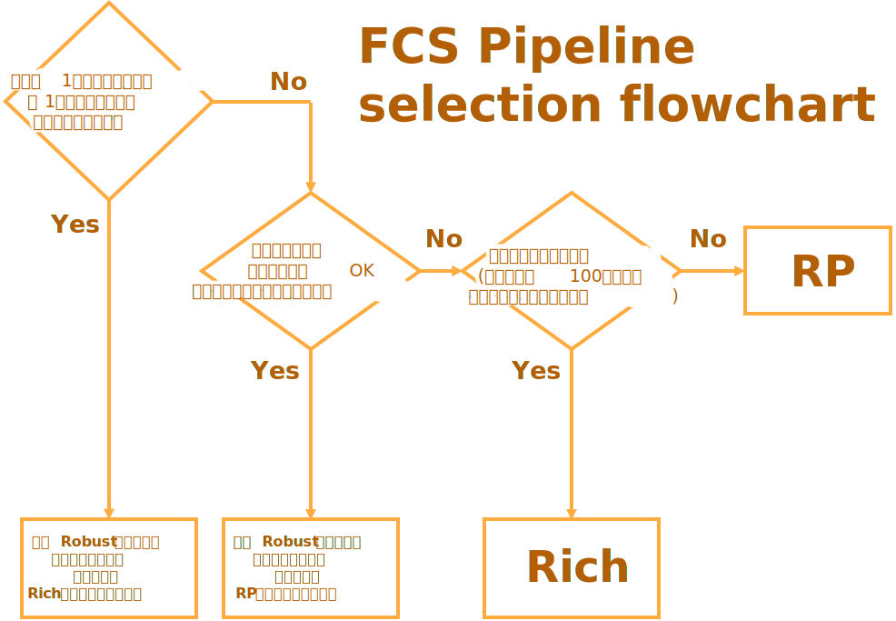

パイプラインの比較
FCSにはビデオを処理するための複数のアルゴリズム (パイプライン) がパッケージ化されています。
各パイプラインは、さまざまな異なる使用状況を想定し設計されています。どのパイプラインを使用すべきかの判断材料として、下記のフローチャートをご使用ください
目次
どのパイプラインを使用すべきか フローチャート

Pipeline 一覧
パイプラインについて詳細を知りたい方へ
現在、Rich、Robust、RPの3つのパイプラインを提供しています。
FCS 25.04まではRichが、FCS 25.07からはRPがデフォルトのパイプラインとなっています。
Rich
このパイプラインは、大量のプロファイル（100個以上）を登録すると、キャラクターの微細な動きがよりよく反映される傾向があります。
通常、大規模なプロジェクト（長編映画、ゲーム）で、ハイクオリティなアニメーションが必要な場合には、最適な選択肢となります。RP
RPパイプラインは、カメラや画角のズレに対する安定性を高めることでRichのより手間のかからない代替手段として機能します。
これにより必要なプロファイル数を減らすことができますが、その代わりに、微細な顔の動きが反映されにくくなります。Robust
このパイプラインは頭部の回転（横を向いてしまった場合など）への適応性が高くなりますが、アニメーションの精度は低くなります。
プロファイル数がとても少ない場合（10未満）により効果的に機能するように設計されています。
また、公式にはサポートされていませんが、アクターが交代する場合（1つのセッションに複数アクターの映像が含まれている場合）、このパイプラインは他の2つよりも優れた性能を発揮します。
状況に応じた最適なパイプラインを選択することで、作業負荷の軽減とクオリティの向上を図ることができます。
プロジェクトの進行中にいつでもパイプラインを変更できます。
ビデオを処理する際に『reprocess』にチェックを入れるだけで確認できますので、ぜひ様々なパイプラインを試してみて、最適なものを見つけてください。
検証詳細
さまざまなパイプラインの特長を示すために、FCSを使用してプロファイルを作成する際に想定される4つの条件・状況で検証しました。
Baseline Only
50個のベースラインROMプロファイルのみを使用してビデオを処理しています。
こちらは最小限の労力でフェイシャルアニメーションを出力する標準的な手順となっております。aseline + Video Profile 10
50個のROMプロファイルとビデオ内から抽出した10個のプロファイルを使用してビデオを処理します。
この項目では解析するビデオからプロファイルを追加することでアニメーションの品質がどのように向上するかを確認できます。Video Profile 10 Only
ビデオ内から抽出した10個のプロファイルのみを使用してビデオを処理します。
この項目ではベースラインROMプロファイルの作成をスキップした場合の各パイプラインのアニメーションクオリティを確認できます。Another Actor：他のアクターでの検証
50個のROMプロファイルのみを使用し、別のアクターの動画を処理します。
この項目では、プロファイルに登録した人物が、処理する動画の人物と異なる場合（アクターの変更などにより）をシミュレーションしています。
こちらはサポートされていないケースとなっておりますので、参考程度にご覧ください。
Gallery
Baseline Only
Performance Video |
Rich |
Robust |
RP |
|---|---|---|---|
Baseline + Video Profile 10
Performance Video |
Rich |
Robust |
RP |
|---|---|---|---|
Video Profile 10 Only
Performace Video |
Rich |
Robust |
RP |
|---|---|---|---|
Another Actor
Performance Video |
Rich |
Robust |
RP |
|---|---|---|---|
結論
処理しようとしているビデオ内から多くのプロファイルを作成できる、または多数のビデオ (複数日の撮影など) にわたって大量のプロファイルを作成できる場合、3 つのパイプラインの中で Rich を使用すると最も優れたアニメーションが出力できる傾向があります。
ただし、処理するビデオ内からプロファイルを作成できない場合（時間的制約などにより）、Robust と RP を使用するとより良い結果が得られます。
プロファイル数が少ない場合（10未満）、多くの場合はRobustが最適な選択肢となります。
プロファイル数が増えるにつれて、RichとRPがより効果的になります。
また、他のアクターの動画を処理する場合には、「Robust」を選択することで他2つと比べてアニメーションが破綻しにくくなります。